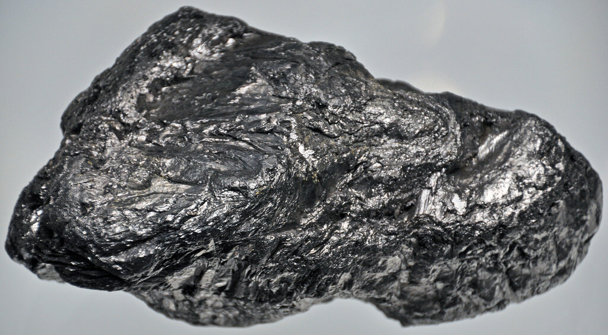

Торий
То́рий (химический символ — Th, от лат. Thorium) — химический элемент 3-й группы (по устаревшей классификации — побочной подгруппы третьей группы, IIIB) седьмого периода периодической системы химических элементов Д. И. Менделеева, с атомным номером 90.Относится к семейству актиноидов.Простое вещество торий — тяжёлый слаборадиоактивный металл серебристого-белого цвета.
Впервые торий выделен Йёнсом Берцелиусом в 1828 году из минерала, позже получившего название торит (содержит силикат тория). Первооткрыватель назвал элемент в честь бога грома из скандинавской мифологии — Тора.

Производство тория ведут из монацитовых концентратов, используя сернокислотное выщелачивание и жидкостную экстракцию. Металл получают кальциетермическим восстановлением ThF4. Мировое производство ThO2 оценивается в 150–200 т/год (2016). Оксид ThO2 применяют для изготовления тиглей, катализаторов, компонентов стёкол с высоким показателем преломления, фторид и оксид – в качестве оптических покрытий. Разрабатываются энергетические атомные реакторы (232Тh при нейтронном облучении превращается в делящийся 233U).